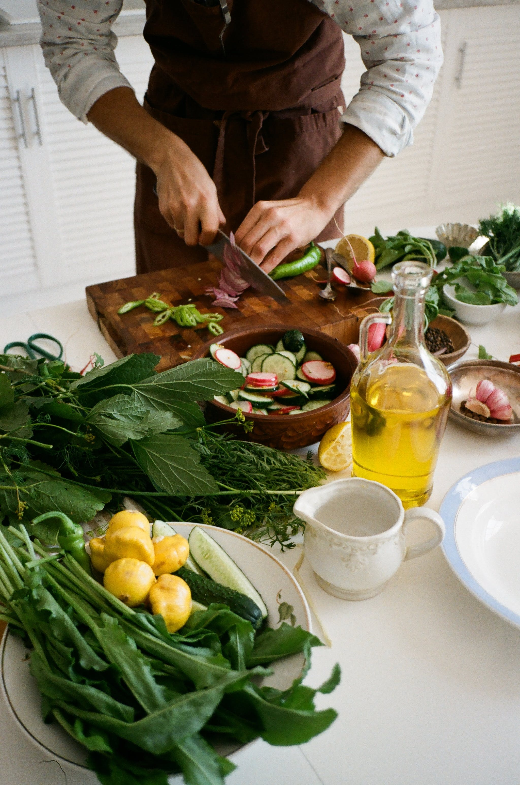

Through hands-on training and mentorship from seasoned professionals, I honed my attention to detail and cultivated a strong sense of responsibility, ensuring that all tasks were executed with precision and efficiency. Additionally, my time at PetDine fostered my ability to work collaboratively within a team, as I actively participated in cross-functional projects, contributing to the seamless coordination and successful execution of production schedules. At PetDine, I not only learned the technical aspects of the pet food industry but also developed strong communication and interpersonal skills through interactions with colleagues and clients. Engaging with diverse stakeholders, I cultivated effective communication strategies and fostered positive working relationships, enabling me to contribute to a supportive and cooperative work environment. My experience at PetDine instilled in me a deep appreciation for the importance of efficiency, teamwork, and continuous improvement, laying a solid foundation for my professional development and preparing me for future career endeavors.
In my most recent role at Starline, I served as a pre-cook, contributing to the efficient and seamless operation of the kitchen. With a focus on precision and attention to detail, I undertook the crucial responsibility of preparing and organizing ingredients before the cooking process, ensuring a smooth workflow for the culinary team. Adhering to strict food safety and hygiene standards, I demonstrated meticulousness in handling and storing ingredients, contributing to the maintenance of a clean and organized kitchen environment. Additionally, my time at Starline enhanced my ability to work under pressure, as I efficiently managed multiple tasks simultaneously, guaranteeing the timely and accurate preparation of ingredients to facilitate a streamlined cooking process.